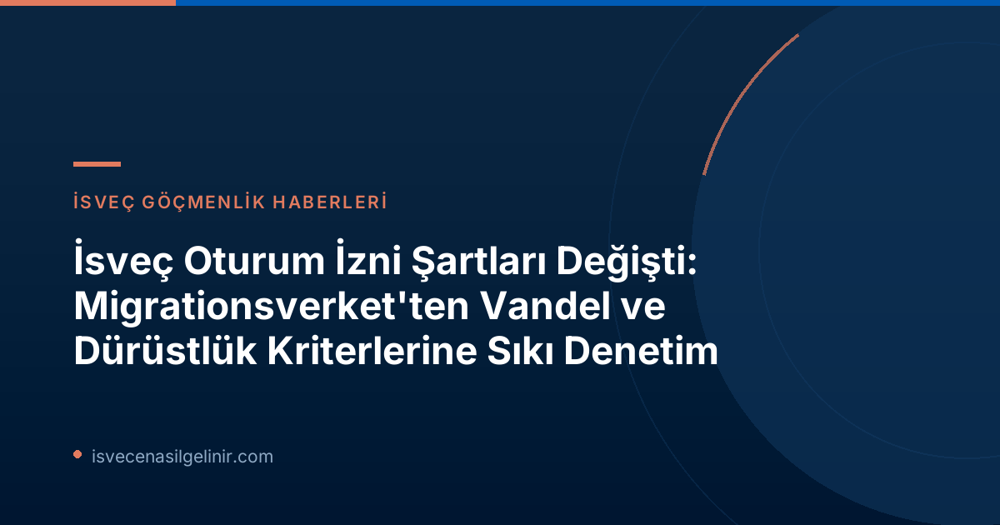

Yeni Düzenleme: İsveç Göçmenlik Ajansı (Migrationsverket)'ndan Vandel Şartlarına Sıkılaştırma
İsveç'e yerleşmek veya mevcut oturum izninizi korumak isteyenler için önemli bir gelişme yaşandı. İsveç Göçmenlik Ajansı (Migrationsverket), 13 Temmuz 2026 tarihinden itibaren geçerli olmak üzere, oturum izni başvurularında ve mevcut izinlerin değerlendirilmesinde "vandel" olarak adlandırılan iyi davranış ve dürüstlük kriterlerini sıkılaştırdığını duyurdu. Bu yeni düzenleme, sadece yasalara uygun hareket etmeyi değil, aynı zamanda İsveç toplumunun temel kurallarına ve değerlerine saygı göstermeyi de daha fazla ön plana çıkarıyor. İsveç'te yaşam ve göçmenlik süreçleri hakkında genel bilgiler ve daha fazlası için İsveç Vatandaşlık Sınavı portalını ziyaret edebilirsiniz.
Vandel Nedir? Neden Şimdi Daha Önemli?
İsveç hukuk sisteminde "vandel" kavramı, bir kişinin toplum içindeki örnek davranışını, dürüstlüğünü ve yasalara uyumunu ifade eder. Daha önce genellikle ciddi suçlar ile ilişkilendirilen vandel değerlendirmesi, yeni düzenlemeyle birlikte suç olmayan ancak toplumsal kurallara ve normlara aykırı kabul edilen eylemleri de kapsayacak şekilde genişletildi. Migrationsverket açıklamasında, “Yetersiz vandel, ille de bir suç teşkil etmeyen, ancak yine de toplumun sürdürmeye çalıştığı kuralları ihlal ettiği düşünülen eylemleri ifade eder,” ifadelerine yer verdi.
Bu, artık daha önce suç kapsamında değerlendirilmeyen ancak sosyal normlara aykırı görülen davranışların da oturum izni süreçlerinde dikkate alınacağı anlamına geliyor. Örneğin, defalarca kural ihlali yapmak, yanlış bilgi vermek, hayatını dürüst olmayan yollarla kazanmak veya suç örgütleriyle ilişki kurmak gibi durumlar, vandel kriterleri kapsamında değerlendirilebilecek davranışlar arasında sayılıyor.
Migrationsverket Vandel Değerlendirmesini Nasıl Yapacak?
Yeni düzenlemeyle birlikte, Migrationsverket bir oturum izni başvurusu aldığında, başvuranın kural uyumu ve iyi davranışı hakkında kapsamlı bir değerlendirme yapacak. Bu değerlendirme sürecinde, bireyin İsveç'teki geçmiş davranışları incelenecek. Kurum, diğer devlet kurumlarından (örneğin Vergi Dairesi, Sosyal Sigortalar Kurumu) şu konularda bilgi toplayabilecek:
- Ödeme emirleri ve borç kayıtları
- Geçim desteği için sunulan bilgiler
- Sosyal sigorta ve diğer sosyal haklara ilişkin beyanlar
Tekil ve daha az ciddi uygunsuz davranışlar genellikle oturum izninin reddedilmesi için yeterli bir gerekçe olmayacaktır. Ancak, bu tür davranışların tekrarlanması veya zaman içinde süreklilik göstermesi, değerlendirme üzerinde önemli bir etkiye sahip olabilir.
| Vandel Değerlendirmesi Kriterleri | Açıklama |
|---|---|
| Kural İhlalleri | Birden fazla kez ve zaman içinde kuralları ihlal etmek. |
| Yanlış Bilgi Vermek | Başvurularda veya diğer resmi işlemlerde yanlış beyanlarda bulunmak. |
| Dürüst Olmayan Geçim Yolları | Gelirini veya yaşamını yasa dışı/etik dışı yollarla sağlamak (suç olmayan ancak etik dışı durumlar). |
| Suç Örgütleriyle İlişki | Doğrudan suça karışmasa da suç örgütleriyle bağlantısı olmak. |
Kimler Bu Değişikliklerden Etkilenecek?
Vandel şartlarındaki sıkılaştırma, tüm oturum izni türlerini aynı şekilde etkilemiyor. Migrationsverket, bu yeni kuralların genellikle EU hukukuna dayanmayan oturum izinlerini kapsadığını belirtiyor.
Özellikle,
- Uluslararası koruma (iltica) başvurusunda bulunanlar için vandel şartları geçerli DEĞİLDİR.
- EU hukukuna dayalı oturum izinleri (çalışma, eğitim veya aile birleşimi gibi AB direktifleri kapsamında olanlar) de bu sıkılaştırılmış vandel şartlarının dışında tutulmuştur.
Bu ayrım, özellikle AB/EEA vatandaşları ve onların aile üyeleri için daha önce olduğu gibi AB hukukunun sağladığı hakların devam ettiği anlamına gelmektedir. Buna karşılık, çoğu üçüncü ülke vatandaşı için yapılan çalışma izni, aile birleşimi (AB dışı aile üyesi) veya diğer ulusal hukuk temelindeki oturum izni başvuruları bu yeni, sıkılaştırılmış vandel kriterlerine tabi olacaktır.
| Durum | Vandel Şartlarından Etkilenir mi? | Ek Bilgi |
|---|---|---|
| AB Hukuku Tabanlı Oturum İzinleri | Hayır | Çalışma, eğitim veya aile birleşimi gibi AB direktifleri kapsamındaki durumlar. |
| Uluslararası Koruma (İltica) | Hayır | Mülteciler ve ikincil koruma statüsü başvuranları. |
| Diğer Oturum İzinleri | Evet | AB dışı ülke vatandaşlarının ulusal İsveç hukuku kapsamındaki tüm oturum izni başvuruları ve değerlendirmeleri. |
Haklarınız ve Bireysel Değerlendirme Prensibi
Migrationsverket, her ne kadar yetkilerini artırmış olsa da, vandel nedeniyle alınacak kararların her zaman yasalara uygun, tarafsız ve somut gerekçelere dayanması gerektiğini vurguluyor. Kurum, bireysel değerlendirme prensibine sıkı sıkıya bağlı kalacağını belirtiyor. Bu, her bir vaka için kişisel durumların ve oturum izni talebinin dayandığı yasal zeminlerin (örneğin aile bağları, insan hakları vb.) titizlikle inceleneceği anlamına gelir. Misconduct (uygunsuz davranış), bireyin oturum izni alma gerekçeleriyle orantılı olarak değerlendirilecektir. Toplumun iyi davranışlı vatandaşlara sahip olma ilgisi ile bireyin oturum izni hakkı arasında dengeli bir karar verilmesi süreci işleyecektir.
Bu bağlamda, başvuruların reddedilmesi veya izinlerin iptal edilmesi kararlarının idari hukuk prensiplerine uygun olması, yani yasallık, objektiflik ve nesnellik ilkelerini takip etmesi gerekmektedir. Eğer bir başvuru sahibi, kendisi hakkında verilen vandel değerlendirmesi kararının haksız olduğunu düşünüyorsa, yasal itiraz yollarına başvurma hakkına sahiptir. sverigemedborgarskapsprov.com adresinden İsveç vatandaşlık süreci ve yasal adımlar hakkında daha fazla bilgi edinebilirsiniz.
Özet ve Tavsiyeler
İsveç'te oturum izni almak veya mevcut izninizi korumak, artık sadece yasal belgelere ve şartlara uymakla kalmayıp, aynı zamanda "vandel" kriterlerini de titizlikle karşılamayı gerektiriyor. Bu yeni düzenleme, İsveç'in göç politikasında dürüstlük ve toplumsal uyuma verdiği önemin bir göstergesi olarak kabul edilebilir. İsveç'e yeni gelecek veya mevcut oturum izni sahiplerinin, ülkenin yasal ve toplumsal kurallarına uyma konusunda daha dikkatli olmaları büyük önem taşımaktadır.
Unutmayın, Migrationsverket'in bu yetkileri, "kötüye kullanımı tespit etmek ve bunlarla mücadele etmek" amacıyla güçlendirildiğini belirtiyor. Mevcut durumu değerlendirirken, şeffaf, dürüst ve yasalara saygılı bir tutum sergilemek, İsveç'teki yaşamınızda ve göçmenlik süreçlerinizde karşılaşabileceğiniz olumsuz durumları minimize etmeye yardımcı olacaktır.
Referanslar
- Migrationsverket Resmi Duyurusu: Skärpta krav på skötsamhet och hederlighet
- İsveç Vatandaşlık Testi ve Süreci Hakkında Detaylı Bilgi: sverigemedborgarskapsprov.com
İsveç'te Yeni Göçmenlik Kuralları Hakkında Merak Ettikleriniz mi Var?
Migrationsverket'in vandel şartlarına getirdiği sıkılaştırmaların sizin durumunuzu nasıl etkileyeceğini merak ediyorsanız veya oturum izni süreçleriyle ilgili güncel bilgi arayışındaysanız, uzman ekibimizle iletişime geçin.